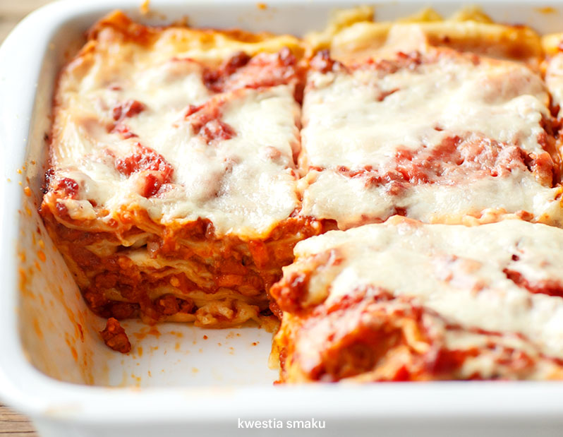

Lasagna

Description
Making lasagna can be time-consuming, but the results are well worth the wait. You'll find a detailed ingredient
list and step-by-step instructions in the recipe below, but let's go over the basics:
Ingredients
- 1 pound sweet Italian sausage
- ¾ pound lean ground beef
- ½ cup minced onion
Steps
- Cook sausage, ground beef, onion, and garlic in a Dutch oven over medium heat until well browned.
- Bring a large pot of lightly salted water to a boil. Cook lasagna noodles in boiling water for 8 to 10 minutes.
- Bake in the preheated oven for 25 minutes. Remove the foil and bake for an additional 25 minutes. Rest lasagna
for 15 minutes before serving.